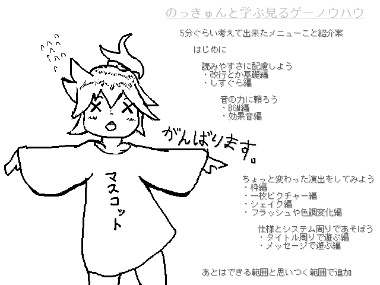

| No.21 | のっきゅんと学ぶ見るゲー(,,×△×)＜のーはー | 容量：534KB | ||
|
 | ||||
| 作者：ざるそば | ジャンル：見るゲを観たりする見るゲ 使用ツール：2000 | 配信：ええよ 動画：ええよ | 感想掲示板 | |
| コメント： つくってる人も難しいことはわかりませんが 見るゲーを作る時にあんまり手間ヒマかけずに ちょっぴりゴージャスに見せるにはどうしたらいいかなーってことを 過去の講座や小ネタから漁ってきて 没ネタ等供養も兼ねてなんとなくまとめてみよう あとノックアウトちゃんがいかにかわいいかの布教をしよう！ みたいな趣旨の見るゲになったらいいな。 具体的なネタに困ってるので 感想板に意見書いてくれればがんばって沿いたいとかも考えてます。 一カ月でやれるとこまで。 No,2のシナリオ周りもお手伝いとかしますんでそっちもよろしくね | ||||
|
管理者からのコメント： ,,×△×）つ（×△×）これは のっくあうと です | ||||
|
最近の更新： 8/15：提出。 7/4：公開。 | ||||